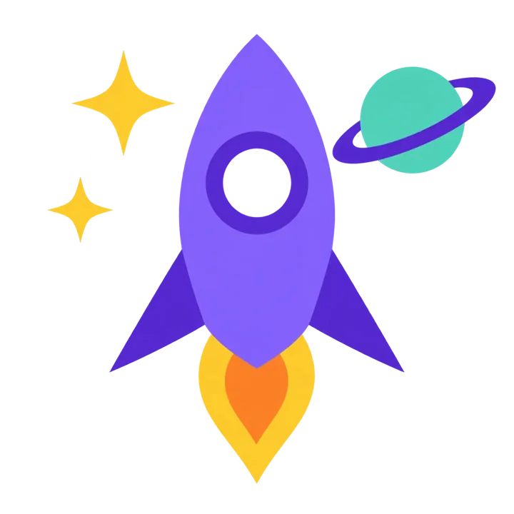
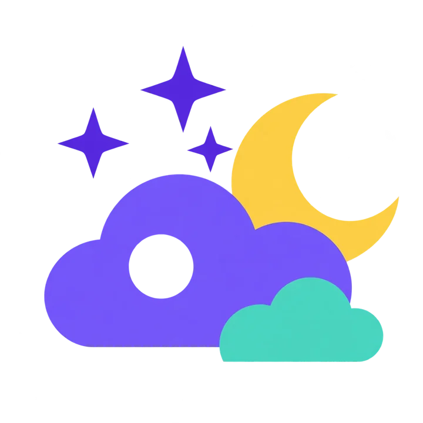
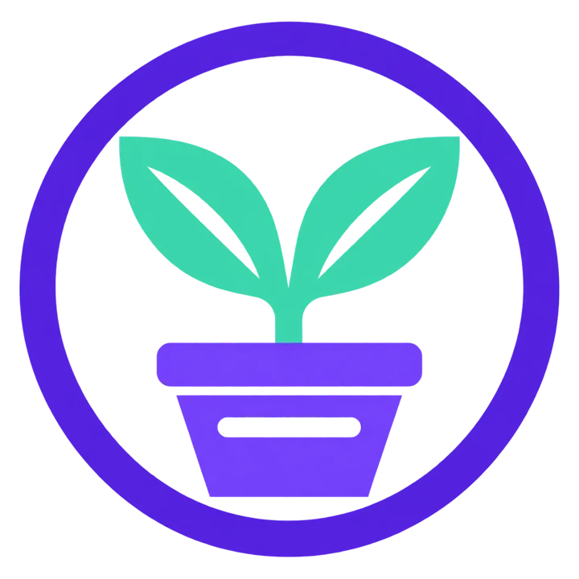

СЛОЖНЫЕ ФОРМЫ
ИЗ ПРОСТЫХ
Булевы операции — Boolean Operations — помогают собрать новый силуэт из кругов, овалов и прямоугольников. Сегодня создадим логотип проекта.
Начать практикуГДЕ НАЙТИ КОМАНДЫ
Выдели две фигуры. Открой меню булевых операций в верхней панели Figma и выбери нужную команду. Если не видишь кнопку, открой поиск действий и введи название операции.
Union — Объединение
Объединяет все выбранные фигуры в общую форму.
Subtract — Вычитание
Верхняя фигура вырезает область из нижней.
Intersect — Пересечение
Остаётся только общая область выбранных фигур.
Exclude — Исключение пересечения
Общая часть двух фигур исчезает, остальные области остаются.
ОДИН СИЛУЭТ —
ДВА СПОСОБА РЕДАКТИРОВАНИЯ
После Union фигуры выглядят объединёнными. Flatten меняет устройство объекта: вместо исходных фигур остаётся слой Vector.
Boolean Group
Внутри сохраняются два круга. Можно выбрать один, передвинуть или изменить его размер — общий силуэт пересчитается.
Vector
Исходных кругов внутри больше нет. Нажми Enter: теперь можно изменять точки полученного контура.
Схематичная иллюстрация: внешний силуэт одинаковый, но редактируется по-разному.
Сравни на практике
Сделай копию своего Union. На копии нажми правую кнопку мыши → Flatten. Сравни слои оригинала и копии, затем нажми Enter на Vector.
Перед Flatten сохрани копию. Один Vector может содержать несколько отдельных контуров: команда не соединяет раздельные части мостиком.
КАКАЯ ОПЕРАЦИЯ?
Слева — исходные фигуры, справа — результат. Определи, какая команда использована. В вычитании зелёная фигура лежит сверху.
Вопрос 1
Вопрос 2
Вопрос 3
Вопрос 4
ПОВТОРИ ЦВЕТОК
Собери четыре овальных лепестка и вырежи круглое отверстие в центре. Лепестки должны перекрываться.
Сам реши, что объединить и какую фигуру положить сверху для вычитания. Размеры могут отличаться от образца.
ЛОГОТИП ПРОЕКТА
Выбери один из трёх образцов или собственную идею. Собери знак из простых фигур в квадратном фрейме 800 × 800 px и добавь короткое название. Можно менять цвета и пропорции; лёгкие оттенки на образцах повторять не обязательно — достаточно однотонных заливок. Нажми на картинку, чтобы рассмотреть её крупнее.

ORBIT · Космос
Создай ракету с двумя крыльями, иллюминатором, пламенем, планетой и двумя звёздами.
Подсказка: какие операции пригодятся?
Intersect — корпус из двух овалов. Union — корпус и крылья, если они одного цвета. Subtract — отверстие иллюминатора и кольцо планеты. Части разных цветов оставляй отдельными.

NIGHT · Ночное небо
Создай два облака разного размера, полумесяц и три звезды. В большом облаке сделай круглый просвет.
Подсказка: какие операции пригодятся?
Union — силуэт каждого облака из кругов и прямоугольника. Subtract — полумесяц из двух кругов и отверстие в облаке.

GREEN · Экология
Создай росток с двумя листьями, горшок с бортиком и прорезью, добавь кольцо вокруг.
Подсказка: какие операции пригодятся?
Intersect — листья из пересечения двух овалов. Union — листья и стебель. Subtract — прожилки, прорезь в горшке и кольцо. Горшок можно получить, вырезав боковые части прямоугольника.
Кнопка создаёт копию шаблона. Для этого нужно войти в свой аккаунт Figma. Выполняй работу в своей копии. Прозрачные отверстия создавай через Subtract.
Требования к работе
Перед сдачей сравни работу с выбранным образцом. Сохрани редактируемую версию в Figma. Для экспорта выдели фрейм → Export → PNG; назови файл своим именем.
Бонус для тех, кто закончил раньше
Сделай второй вариант логотипа на тёмном фоне и сохрани читаемость знака и названия.